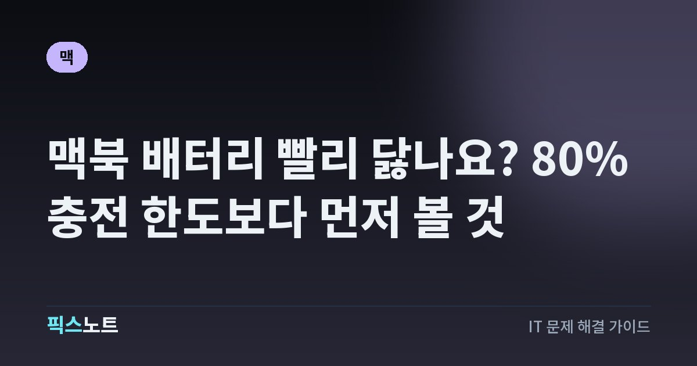

맥북 배터리 빨리 닳나요? 80% 충전 한도보다 먼저 볼 것
맥북 배터리 사용 시간이 줄었을 때 성능 상태·사이클·최적화 충전·발열을 확인하는 순서를 정리해요.

맥북 배터리를 오래 쓰려고 매번 80%에서 충전을 끊거나 충전기를 빼는 사람이 있어요. 그런데 배터리가 이미 노화됐거나 특정 앱이 전력을 많이 쓰는 상황이라면 충전 습관만 바꿔서는 원인을 알 수 없어요. Apple이 안내하는 배터리 성능 상태와 충전 기능부터 확인하면 관리할 부분과 점검이 필요한 상황을 구분할 수 있어요.
배터리 사용 시간이 줄었으면 성능 상태부터 확인해요
충전을 몇 퍼센트까지 하느냐보다 먼저 확인할 곳은 macOS가 알려 주는 배터리 성능 상태예요. Apple은 시스템 설정의 배터리 화면에서 '정상'과 '서비스가 권장됨' 같은 상태를 보여 준다고 설명해요. '서비스가 권장됨'은 새 배터리보다 충전 용량이 줄었거나 배터리가 정상적으로 작동하지 않을 수 있다는 뜻이에요. 이 표시가 있다고 바로 사용을 중단해야 하는 것은 아니지만 충전 습관을 바꾸는 것만으로 성능을 회복할 수 있다는 의미도 아니에요. 갑자기 사용 시간이 짧아졌다면 상태와 최근 변화부터 적어 보세요. 구형 Mac은 메뉴 구성이 달라 배터리 성능 상태 항목이 표시되지 않을 수도 있어요.
사이클은 충전기를 꽂은 횟수와 달라요
배터리 사이클은 충전기를 연결한 횟수가 아니라 배터리 전력을 합쳐 100%만큼 사용했을 때 1회로 계산해요. 하루에 배터리 절반을 사용하고 다음 날에도 절반을 사용하면 충전은 두 번 하더라도 사이클은 한 번일 수 있어요. Apple은 Mac 모델마다 배터리의 최대 사이클 수가 다르다고 안내하므로 다른 사람의 숫자와 무조건 비교하지 않는 편이 좋아요. 시스템 정보에서 내 사이클 수를 확인한 뒤 모델별 기준과 현재 사용 시간을 함께 보세요. 사이클 수 하나만으로 고장이나 당장 교체할 시점이 확정되는 것은 아니에요.
- option 키를 누른 상태로 Apple 메뉴를 열어요.
- 시스템 정보를 선택하고 하드웨어 항목의 전원을 열어요.
- 배터리 정보에서 사이클 수를 보고 내 모델의 사양과 비교해요.
최적화된 충전은 80% 부근에서 멈출 수 있어요
Mac이 80% 근처에서 충전을 잠시 멈췄다면 고장이라고 단정하지 마세요. Apple의 최적화된 배터리 충전은 사용 패턴을 학습해 장시간 전원에 연결될 것으로 예상될 때 완충 시점을 늦출 수 있어요. 이 기능은 macOS Big Sur 11 이후 버전에서 제공돼요. 배터리 상태 메뉴에 '충전 대기 중'이라는 표시가 보이면 이런 관리 기능이 작동하고 있을 수 있어요. 장거리 이동 전에 100%가 필요하다면 상태 메뉴에서 '지금 완전히 충전'을 선택할 수 있어요. 매번 기능을 껐다 켜기보다 평소 사용 패턴에 맞게 작동하는지 먼저 확인해 보세요. 충전이 잠시 멈췄다는 사실만으로 배터리 고장이 확인되는 것은 아니에요.
충전 한도는 지원하는 맥에서만 설정할 수 있어요
Apple 공식 문서는 충전 한도를 사용하려면 Apple Silicon이 탑재된 Mac과 macOS Tahoe 26.4 이후 버전이 필요하다고 안내해요. 지원되는 환경에서는 설정한 한도에 가까워지면 Mac이 충전을 멈추고 배터리 상태 메뉴에 한도까지 충전됐다는 안내를 표시해요. 80~100% 중에서 한도를 고를 수 있지만 모든 Mac에 같은 설정이 있는 것은 아니에요. 구형 Intel Mac에서 충전 한도 메뉴가 보이지 않는다고 문제가 생긴 것은 아니에요. 설정 한도와 최적화 충전의 대기 표시는 서로 다른 기능에 의해 나타날 수 있으므로 화면의 문구를 확인하는 것이 정확해요.
- Apple 메뉴 > 시스템 설정 > 배터리를 열어요.
- 지원 기기라면 충전 옆 정보 버튼을 선택해요.
- 충전 한도를 80~100%에서 정하고 완료를 눌러요.
가끔 100%까지 충전되는 것도 이상은 아니에요
최적화된 배터리 충전이나 충전 한도를 설정한 Mac이 가끔 100%까지 충전된다고 기능이 꺼졌다고 생각할 필요는 없어요. Apple은 배터리 잔량을 정확하게 추정하기 위해 이러한 기능을 쓰는 상황에서도 때때로 완충한다고 설명해요. 설정한 충전 한도에 도달해 충전이 멈췄다가 잔량이 줄어든 뒤 다시 시작하는 동작도 공식 안내에 포함돼 있어요. 따라서 충전 표시가 늘 같은 숫자에 멈춰야 한다고 기대하면 정상 동작도 오류처럼 보일 수 있어요. 메뉴 막대의 배터리 상태 메시지와 실제 사용 패턴을 함께 확인해요. 완충이 필요한 날에는 지금 완전히 충전 기능을 이용하면 돼요.
열과 전력 사용량도 함께 관리해요
Apple은 배터리의 화학적 노화에 온도 이력과 충전 패턴이 영향을 준다고 설명해요. 충전 중 컴퓨터가 지나치게 뜨겁다면 통풍을 막는 이불이나 쿠션 위에 두지 말고 열이 빠져나갈 수 있는 책상에서 사용해요. 사용 시간이 짧아지는 현상을 전부 배터리 노화로 볼 수도 없어요. 평소보다 높은 화면 밝기, 여러 앱의 동시 실행, 무거운 영상 작업으로 전력 사용이 늘었을 가능성도 살펴보세요. 같은 작업을 할 때 이전보다 얼마나 짧아졌는지 비교하면 판단에 도움이 돼요. 다른 충전기나 케이블을 쓰기 시작한 뒤 충전이 느려졌다면 기기에 맞는 전원 어댑터를 사용하는지도 확인하세요.
'서비스가 권장됨'이 뜨면 교체 여부를 판단해요
배터리 설정에서 '서비스가 권장됨'이 보이면 중요한 작업을 저장하고 현재 사용 시간과 충전 안정성이 생활에 얼마나 영향을 주는지 확인해요. Apple은 이런 상태에서도 Mac을 사용할 수 있지만 충전 성능이 낮아졌거나 정상 작동하지 않을 수 있다고 설명해요. 배터리가 전혀 충전되지 않거나 갑자기 꺼지는 문제가 반복된다면 충전기와 어댑터를 확인한 뒤 Apple 진단이나 공인 서비스 점검을 검토해요. 교체 비용과 조건은 모델 및 보증 상태에 따라 달라져요. 비공식 배터리 교체를 서두르기보다 정확한 상태를 확인하고 필요한 문서를 백업한 뒤 수리 옵션을 알아보세요.
자주 묻는 질문
맥북 배터리가 80%에서 멈추면 고장인가요?
꼭 그렇지는 않아요. 최적화된 배터리 충전이 완충 시점을 늦추거나 지원되는 Mac의 충전 한도가 적용됐을 수 있어요. 배터리 상태 메뉴의 메시지를 확인하고 필요하면 '지금 완전히 충전'을 이용해 보세요.
맥북 배터리 사이클 수가 높으면 바로 교체해야 하나요?
사이클 수는 배터리 사용량을 보는 지표지만 모델마다 기준이 달라요. 현재 배터리 성능 상태와 실제 사용 시간을 같이 확인하고, '서비스가 권장됨' 표시나 충전 이상이 있을 때 점검 여부를 판단해 보세요.
맥북 충전 한도 80%를 설정하는 메뉴가 안 보여요. 왜죠?
Apple 안내에 따르면 충전 한도는 Apple Silicon이 탑재된 Mac과 macOS Tahoe 26.4 이후 버전에서 지원돼요. 먼저 Mac 종류와 macOS 버전을 확인하고 메뉴가 없으면 해당 모델에서 제공되는 최적화된 충전 기능을 사용해 보세요.
맥북 배터리가 '서비스가 권장됨'이면 계속 써도 되나요?
Apple은 이 표시가 떠도 Mac을 계속 사용할 수 있다고 안내해요. 다만 배터리 용량 저하로 사용 시간이 짧아지거나 충전이 불안정할 수 있으니 데이터를 백업하고 Apple 지원에서 점검 및 교체 조건을 확인해 보세요.